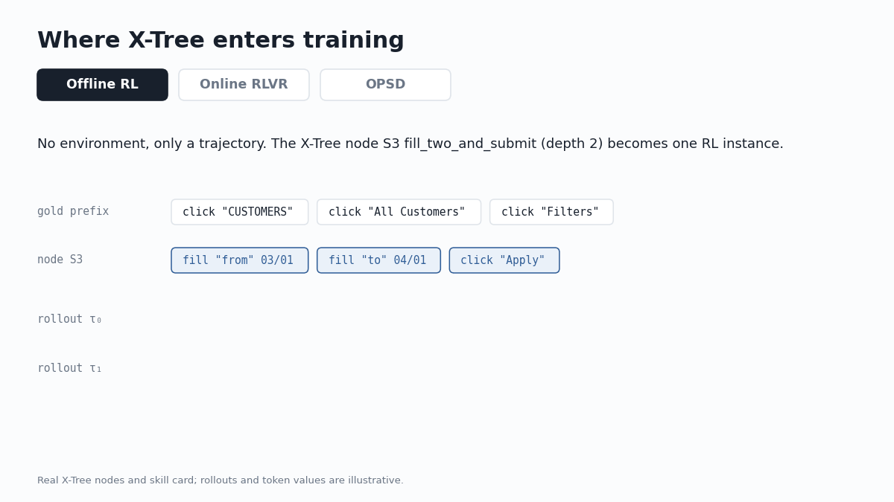

Tokenizing experience
Agent trajectories are full of routines that repeat across tasks. We mine them into a tree of skills by counting alone, then train the model on that tree.
Training data for agents is expensive. Every trajectory needs an environment, a task and a verifier that can be trusted, and none of that scales the way web text does. Yet a trajectory enters training as a flat stream of actions. SFT and RL weight every token the same, so a model learns “fill a date, fill a date, click apply” from scratch each time it sees it, on every site where it appears.
People do not learn this way. We notice that a sequence of steps recurs, give it a name, and plan with it. The hierarchy is already in the data. The training objective ignores it.
Recent agent systems do use this structure, but only by asking an LLM to write skills in natural language and retrieving them into the prompt. Nothing enters the weights, and the library cannot be rebuilt from the data. We wanted the structure to come from the trajectories themselves, and to train on it.
Counting, not prompting
Language models already solve a version of this problem before training starts. A tokenizer turns characters into a vocabulary by repeatedly merging the pair that co-occurs most often. We apply the same idea to actions, with two changes.
First, actions are made comparable. Each raw action becomes a typed token such as type⟨date⟩ or click⟨button⟩, and the element ids and values move into slots. Two date filters on different pages now read as the same symbol.
Second, merges are chosen by reusability, not frequency alone. We score an adjacent pair by how often it recurs, how long the merged span is, and how often it appears in successful episodes. A merge must also shorten the corpus by more than it costs. The merges stack, and the result is a tree: a reusable experience tree, or X-Tree.

What a node looks like
Here is one node from the WebArena tree, drawn from a real trajectory in which the agent finds customers who registered in March 2023. The depth-2 node S3 fills two fields and submits: one text input, then the node S1, which fills a field and clicks a button. It occurs 411 times across 7,974 trajectories, as a date filter on the admin panel and as a route query on the map. Combined with the navigation node above it, it forms S127, which filters a table by a date range.
Every node in the tree is like this: a routine found by counting, with its depth, length and corpus count. The IDs come from the miner, and the names are ours. The interactive explorer on the project page shows fourteen such trajectories from WebArena, ScienceWorld, WebShop and MiniWoB++.
Three ways to train on a tree
A tree is only useful if training can use it. We built one integration for each setting an agent developer is likely to be in.
- Only trajectories, no environment. Each node becomes an RL instance. The policy continues from the gold prefix before the node and is rewarded for matching each step and for completing the node, with a bonus that grows with depth.
- An environment with a verifier. Each rollout earns a bonus for every mined skill it executes. The bonus is at full strength when no rollout in a group succeeds, and fades as the verifier starts to separate good rollouts from bad ones.
- On-policy self-distillation. The model reads a rendered X-Tree as privileged context and acts as its own teacher. The tree replaces the LLM-written skill bank that such methods normally use.

What we found
On WebArena, with the same Go-Browse trajectories and no environment during training, offline RL with X-Tree raises success from 18.4% to 22.9%, a 24% relative gain. Two extra SFT epochs at the same compute add only 0.4 points. When we keep the RL stage and swap the tree for a random one with the same number of merges, the score falls below SFT. The gain comes from the structure, not from extra optimization.
With a verifier, the adaptive bonus improves outcome-only GRPO at 1.5B, 3B and 7B: by up to 4.9 points on ScienceWorld tasks seen in training and up to 3.9 on held-out task types, and by up to 3.6 points of success and 4.6 of graded score on WebShop. The bonus helps most when reward is scarce. On ScienceWorld the gap is largest at four rollouts per prompt and narrows at sixteen, where the verifier already provides enough signal.
As privileged context for self-distillation, the mined tree performs on par with a skill bank written by gpt-oss-120b on ScienceWorld and GPT-o3 on WebShop. At 7B it reaches 5.8 points over outcome-only RL on ScienceWorld.
The tree does not need much data. One mined from 100 WebShop trajectories already beats the outcome-only baseline.

What is next
We mine the tree once from a fixed pool. Mining from the policy's own trajectories would let the tree and the policy improve together. We also use each integration on its own. Combining nodes as data, the bonus and distillation in one model is the obvious next step. And because the tree records which routines recur and which succeed, it also shows where a corpus is thin, which is where new trajectories are worth collecting.